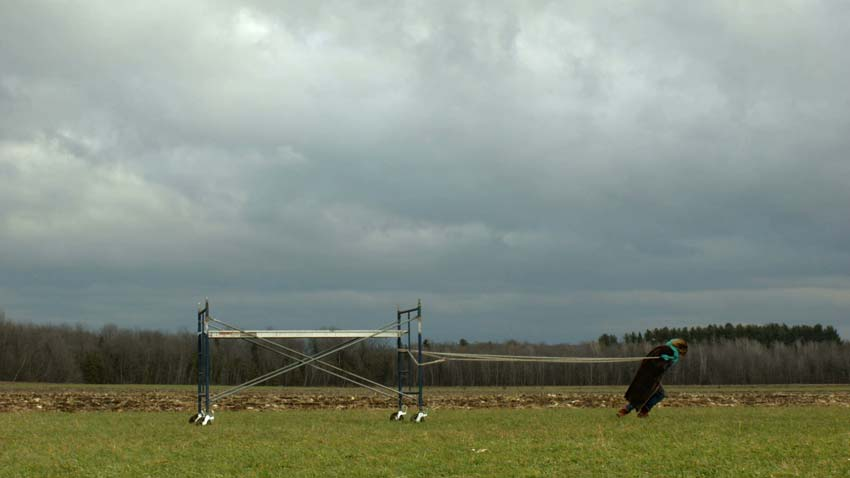
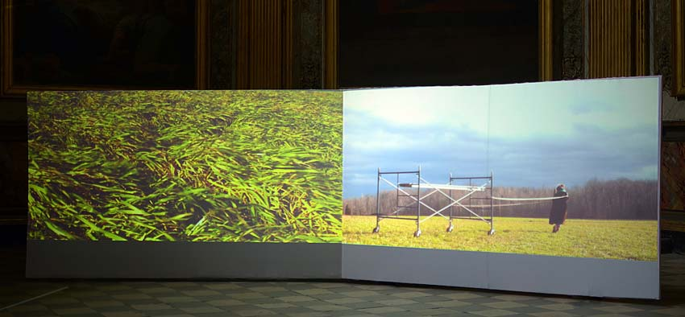

Jessica Arseneau
:: portfolio
Images et projets
Lost Idyll
2015
Vidéo numérique
00:11:55 en boucle
Comprenant alternativement une ou deux images projetées côte à côte à l’angle de deux murs, cette installation vidéo nous montre une femme transportant un encombrant échafaudage à travers une forêt automnale et un no man’s land. Entrant dans le champ de l'une des images et sortant de l'autre, cette femme effectue un mouvement sisyphéen, se répétant d'un endroit à un autre dans une mobilité continue.
Structures éphémères composant nos paysages urbains, les échafaudages caractérisent le spectacle du quotidien et sont des figures communes de notre imaginaire collectif. En tirant cette structure à la force de ses bras, cette femme qu’aucun détail ne singularise médiatise le rapport que tout individu entretient avec un environnement coercitif.



Enfin, le vent puissant et le ciel tourmenté confèrent au diptyque une dimension dramatique, tandis que la lenteur des séquences plonge l’observateur dans la contemplation mélancolique de la scène. Par moments, les séquences projetées sont identiques mais quelque peu décalées dans le temps, ceci évoquant une double conscience, peut-être confuse, qui semble dériver elle aussi.

 Installation à la Chapelle des Carmélites, durant les Rencontres Traverse Vidéo, Toulouse.
Installation à la Chapelle des Carmélites, durant les Rencontres Traverse Vidéo, Toulouse.
REMERCIEMENTS SPÉCIAUX À
Normand Forget à qui ce projet est dédié
et à
Léandre Bourgeois
Jean-Francois Boisvenue
Martine Brisson
Jérôme Décarie
Éric Delarue
Jean-François Desaulniers
Claude Desbiens
Violaine Gauvreau
Élodie Lançon
Will Niava
Julie Perron
Marc-Yvan S. Poitras
Martin Skorek
Carl Surprenant